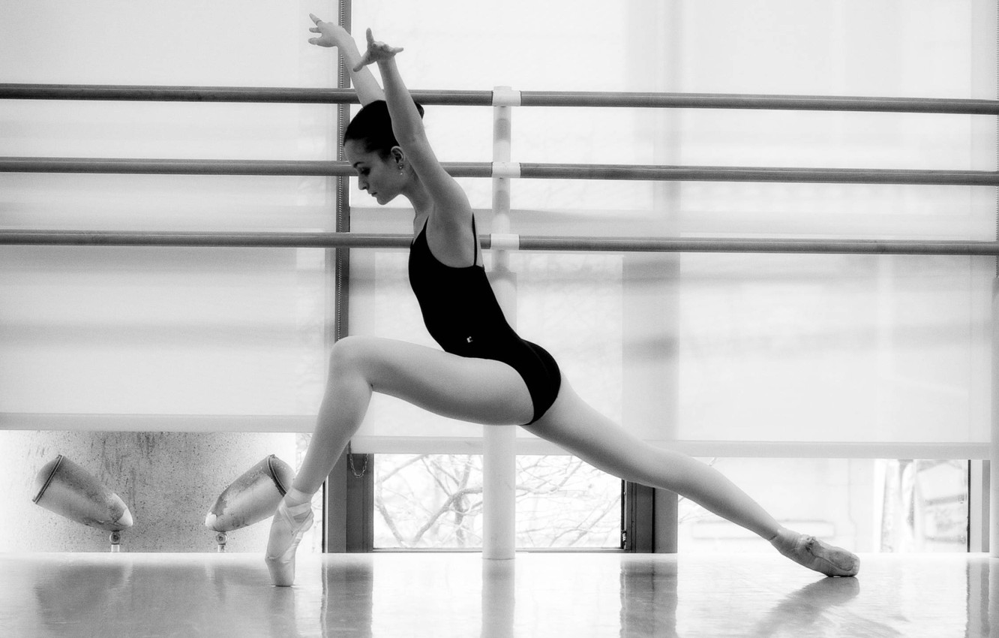
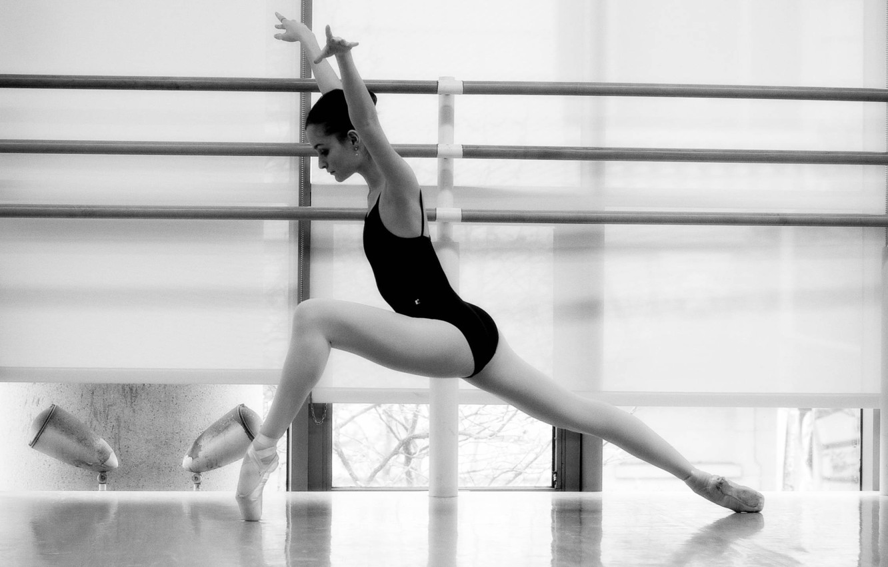

Стретчинг для начинающих – все о пользе растяжки
Стретчинг— это ряд физических упражнений, направленных на растяжение определенных мышц или сухожилий, или группы мышц, для улучшение чувствительности повышения тонуса. Как результат — увеличение мышечного контроля, гибкости и диапазона движений.
 

Как понять, что вам нужен именно стретчинг?
Начнем с того, что никаких возрастных ограничений стретчинг не имеет. А вот иметь гибкое тело с красивой осанкой мечтают все. Так вот это можно получить благодаря стретчингу, который также помогает бороться со стрессом, улучшает метаболизм.
Для современных людей, а именно жителей мегаполисов, которые нередко страдают гиподинамией, польза стретчинга неоспорима, ведь он помогает:
- подтянуть тело, смоделировать мышечный корсет
- улучшить осанку и координацию
- прорабатывать мышцы стабилизаторы, которые редко задействуются в повседневной жизни
- развить гибкость
- избавится от застойных явлений
- улучшить кровообращение и обмен веществ
Виды стретчинга:
Чаще всего различают базовый стрейчинг (простые упражнения на полу для новичков, которые позволят подготовить тело к другим видам стретчинга) и аэростретчинг (занятия на растяжку в воздухе с помощью подвешенных к потолку полотен, которые позволят увеличить нагрузку на мышцы (новичкам не подойдет).
Однако в зависимости от степени нагрузки на мышцы существует мягкий стретчинг (мышцы растягиваются до своей привычной длины, а упражнения выполняются по 40 секунд) и глубокий (растягивает мышцы до новой длины. Тут упражнения выполняются от 1 до 5 минут).
Шпагат: виды и расположение в пространстве
Красивый шпагат является символом гибкости тела. Этот элемент используется в танцах, акробатике, гимнастике и даже в боевых искусствах.
Сам шпагат – это одно из упражнений на растяжку. И все его виды объединяют несколько положений:
- ноги разведены в противоположных друг от друга направлениях и образуют одну линию;
- внутренние поверхности бёдер образуют угол не менее 180;
- условная линия, соединяющая Ваш правый и левый тазобедренные суставы строго перпендикулярна линии шпагата в его плоскости (продольный шпагат) или параллельна ему (поперечный шпагат);
- сам таз подвернут вперед.
Мы с Вами, слава Богам, не нарисованные мультяшные герои, и живем в трехмерном пространстве. Что это нам дает? Возможность размещать наш шпагат в пространстве. При условии, что физических сил на это хватит. По расположению в пространстве различают: горизонтальный шпагат,вертикальный шпагат,шпагат,исполняемый на руках,шпагат в воздухе.
Если вы не верите, что вы способны сделать поперечный шпагат, вы никогда не сможете его сделать. И наоборот. Уверенность и спокойствие йога позволят достигнуть исключительной растяжки.
«Гибкость, Сила, Выносливость»Попенко В.А.